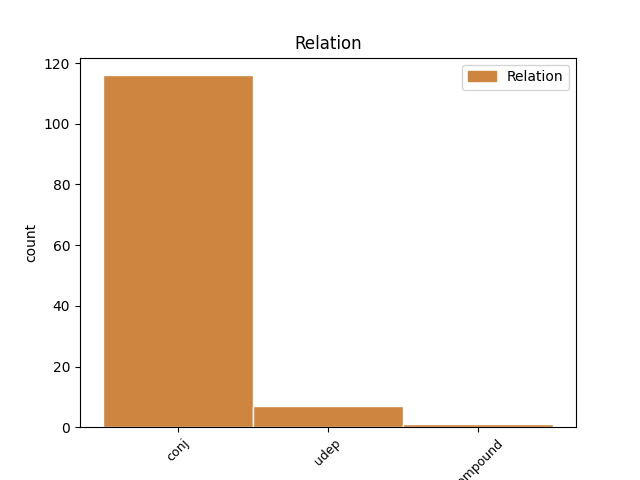
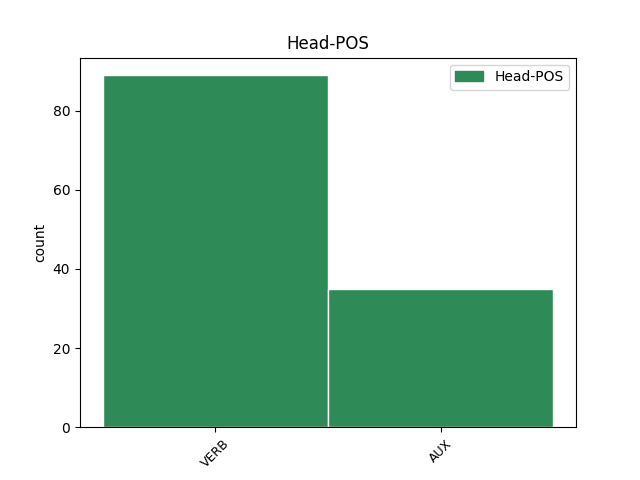
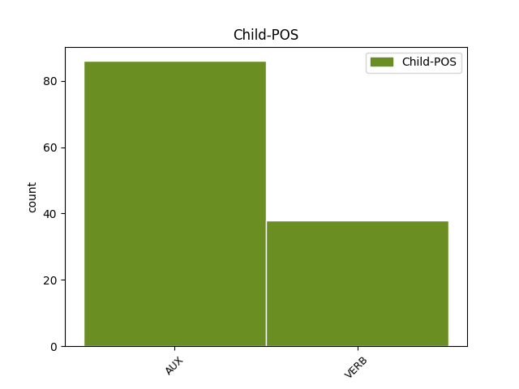

Distribution of features within this leaf



Agreement Rules sorted by frequency.
- When the dependent token is the conjunct(conj) of the head token,
1 امریکی _ _ _ _ 0 _ _ _
2 مسلح _ _ _ _ 0 _ _ _
3 افواج _ _ _ _ 0 _ _ _
4 کے _ _ _ _ 0 _ _ _
5 سربراہ _ _ _ _ 0 _ _ _
6 چیرمین _ _ _ _ 0 _ _ _
7 جوائنٹ _ _ _ _ 0 _ _ _
8 چیفس _ _ _ _ 0 _ _ _
9 آف _ _ _ _ 0 _ _ _
10 اسٹاف _ _ _ _ 0 _ _ _
11 ایڈمرل _ _ _ _ 0 _ _ _
12 مائیک _ _ _ _ 0 _ _ _
13 مولن _ _ _ _ 0 _ _ _
14 نے _ _ _ _ 0 _ _ _
15 جنگ _ _ _ _ 0 _ _ _
16 کو _ _ _ _ 0 _ _ _
17 انٹرویو _ _ _ _ 0 _ _ _
18 دیتے _ _ _ _ 0 _ _ _
19 ہوئے _ _ _ _ 0 _ _ _
20 اس _ _ _ _ 0 _ _ _
21 بات _ _ _ _ 0 _ _ _
22 کا _ _ _ _ 0 _ _ _
23 اعتراف _ _ _ _ 0 _ _ _
24 کیا _ _ _ _ 0 _ _ _
25 ہے _ _ _ _ 0 _ _ _
26 کہ _ _ _ _ 0 _ _ _
27 پاک _ _ _ _ 0 _ _ _
28 امریکہ _ _ _ _ 0 _ _ _
29 تعلقات _ _ _ _ 0 _ _ _
30 گزشتہ _ _ _ _ 0 _ _ _
31 کئی _ _ _ _ 0 _ _ _
32 ماہ _ _ _ _ 0 _ _ _
33 سے _ _ _ _ 0 _ _ _
34 مشکلات _ _ _ _ 0 _ _ _
35 کا _ _ _ _ 0 _ _ _
36 شکار _ _ _ _ 0 _ _ _
37 ہےں ہے VERB VM Mood=Ind|Number=Plur|Person=3|Tense=Pres|VerbForm=Fin|Voice=Act 0 _ _ _
38 اور _ _ _ _ 0 _ _ _
39 دونوں _ _ _ _ 0 _ _ _
40 ملکوں _ _ _ _ 0 _ _ _
41 کے _ _ _ _ 0 _ _ _
42 درمیان _ _ _ _ 0 _ _ _
43 اعتماد _ _ _ _ 0 _ _ _
44 کا _ _ _ _ 0 _ _ _
45 فقدان _ _ _ _ 0 _ _ _
46 ہے ہے VERB VM Mood=Ind|Number=Sing|Person=3|Tense=Pres|VerbForm=Fin|Voice=Act 37 conj _ ChunkId=VGF3|ChunkType=head|SpaceAfter=No|Stype=declarative|Tam=hE|Vib=ہے
47 ۔ _ _ _ _ 0 _ _ _
1 ونڈے _ _ _ _ 0 _ _ _
2 کرکٹ _ _ _ _ 0 _ _ _
3 کی _ _ _ _ 0 _ _ _
4 دو _ _ _ _ 0 _ _ _
5 سابق _ _ _ _ 0 _ _ _
6 چیمپین _ _ _ _ 0 _ _ _
7 ٹیمیں _ _ _ _ 0 _ _ _
8 ویسٹ _ _ _ _ 0 _ _ _
9 انڈیز _ _ _ _ 0 _ _ _
10 اور _ _ _ _ 0 _ _ _
11 پاکستان _ _ _ _ 0 _ _ _
12 پہلی _ _ _ _ 0 _ _ _
13 مرتبہ _ _ _ _ 0 _ _ _
14 ٹوئنٹی _ _ _ _ 0 _ _ _
15 20 _ _ _ _ 0 _ _ _
16 بین _ _ _ _ 0 _ _ _
17 الاقوامی _ _ _ _ 0 _ _ _
18 میچ _ _ _ _ 0 _ _ _
19 مےں _ _ _ _ 0 _ _ _
20 کل _ _ _ _ 0 _ _ _
21 یہاں _ _ _ _ 0 _ _ _
22 مدمقابل _ _ _ _ 0 _ _ _
23 ہوںگی ہے VERB VM Mood=Ind|Number=Sing|Person=3|Tense=Fut|VerbForm=Fin|Voice=Act 0 _ _ _
24 دلچسپ _ _ _ _ 0 _ _ _
25 پہلو _ _ _ _ 0 _ _ _
26 یہ _ _ _ _ 0 _ _ _
27 بھی _ _ _ _ 0 _ _ _
28 ہے ہے AUX VM Mood=Ind|Number=Sing|Person=3|Tense=Pres|VerbForm=Fin|Voice=Act 23 udep _ AltTag=AUX-VERB|ChunkId=VGF2|ChunkType=head|Stype=declarative|Tam=hE|Vib=ہے
29 کہ _ _ _ _ 0 _ _ _
30 کرکٹ _ _ _ _ 0 _ _ _
31 کے _ _ _ _ 0 _ _ _
32 مختصرترین _ _ _ _ 0 _ _ _
33 اور _ _ _ _ 0 _ _ _
34 مقبول _ _ _ _ 0 _ _ _
35 عام _ _ _ _ 0 _ _ _
36 ٹوئنٹی _ _ _ _ 0 _ _ _
37 20 _ _ _ _ 0 _ _ _
38 کرکٹ _ _ _ _ 0 _ _ _
39 مےں _ _ _ _ 0 _ _ _
40 پاکستان _ _ _ _ 0 _ _ _
41 اور _ _ _ _ 0 _ _ _
42 ویسٹ _ _ _ _ 0 _ _ _
43 انڈیز _ _ _ _ 0 _ _ _
44 پہلی _ _ _ _ 0 _ _ _
45 مرتبہ _ _ _ _ 0 _ _ _
46 اےک _ _ _ _ 0 _ _ _
47 دوسرے _ _ _ _ 0 _ _ _
48 کے _ _ _ _ 0 _ _ _
49 خلاف _ _ _ _ 0 _ _ _
50 میدان _ _ _ _ 0 _ _ _
51 سنبھالےگی _ _ _ _ 0 _ _ _
52 حالانکہ _ _ _ _ 0 _ _ _
53 ٹوئنٹی _ _ _ _ 0 _ _ _
54 20 _ _ _ _ 0 _ _ _
55 ورلڈ _ _ _ _ 0 _ _ _
56 کپ _ _ _ _ 0 _ _ _
57 ویسٹ _ _ _ _ 0 _ _ _
58 انڈیز _ _ _ _ 0 _ _ _
59 مےں _ _ _ _ 0 _ _ _
60 ہی _ _ _ _ 0 _ _ _
61 کھیلا _ _ _ _ 0 _ _ _
62 گیا _ _ _ _ 0 _ _ _
63 تھا _ _ _ _ 0 _ _ _
64 ۔ _ _ _ _ 0 _ _ _
1 اگر _ _ _ _ 0 _ _ _
2 انہیں _ _ _ _ 0 _ _ _
3 اصل _ _ _ _ 0 _ _ _
4 سی_ڈی _ _ _ _ 0 _ _ _
5 دستیاب _ _ _ _ 0 _ _ _
6 ہو _ _ _ _ 0 _ _ _
7 تو _ _ _ _ 0 _ _ _
8 وہ _ _ _ _ 0 _ _ _
9 آڈیو _ _ _ _ 0 _ _ _
10 فائیلس _ _ _ _ 0 _ _ _
11 کے _ _ _ _ 0 _ _ _
12 ساتھ _ _ _ _ 0 _ _ _
13 اس _ _ _ _ 0 _ _ _
14 کا _ _ _ _ 0 _ _ _
15 تقابل _ _ _ _ 0 _ _ _
16 کریں کر VERB VM Mood=Ind|Number=Plur|Person=3|Tense=Fut|VerbForm=Fin|Voice=Act 0 _ _ _
17 گے کر VERB VM Mood=Ind|Number=Plur|Person=3|Tense=Fut|VerbForm=Fin 16 compound _ ChunkId=VGF2|ChunkType=child|SpaceAfter=No|Tam=gA|Vib=گا
18 ۔ _ _ _ _ 0 _ _ _
Disagree Examples:
1 بعد _ _ _ _ 0 _ _ _
2 ازاں _ _ _ _ 0 _ _ _
3 اسپیشل _ _ _ _ 0 _ _ _
4 کمشنر _ _ _ _ 0 _ _ _
5 جی _ _ _ _ 0 _ _ _
6 ایچ _ _ _ _ 0 _ _ _
7 ایم _ _ _ _ 0 _ _ _
8 سی _ _ _ _ 0 _ _ _
9 مسٹر _ _ _ _ 0 _ _ _
10 کرشنا _ _ _ _ 0 _ _ _
11 بابو _ _ _ _ 0 _ _ _
12 نے _ _ _ _ 0 _ _ _
13 کہا _ _ _ _ 0 _ _ _
14 کہ _ _ _ _ 0 _ _ _
15 وہ _ _ _ _ 0 _ _ _
16 کسی _ _ _ _ 0 _ _ _
17 بھی _ _ _ _ 0 _ _ _
18 حال _ _ _ _ 0 _ _ _
19 سرکاری _ _ _ _ 0 _ _ _
20 احکامات _ _ _ _ 0 _ _ _
21 کی _ _ _ _ 0 _ _ _
22 عمل_آوری _ _ _ _ 0 _ _ _
23 کریں کر VERB VM Mood=Sub|VerbForm=Fin|Voice=Act 0 _ _ _
24 گے _ _ _ _ 0 _ _ _
25 اور _ _ _ _ 0 _ _ _
26 چمڑے _ _ _ _ 0 _ _ _
27 کی _ _ _ _ 0 _ _ _
28 اس _ _ _ _ 0 _ _ _
29 علاقہ _ _ _ _ 0 _ _ _
30 سے _ _ _ _ 0 _ _ _
31 منتقلی _ _ _ _ 0 _ _ _
32 پر _ _ _ _ 0 _ _ _
33 کارروائی _ _ _ _ 0 _ _ _
34 جاری _ _ _ _ 0 _ _ _
35 رہے _ _ _ _ 0 _ _ _
36 گی گی AUX VAUX Gender=Masc|Mood=Ind|Number=Sing|Person=3|Tense=Fut|VerbForm=Fin 23 conj _ ChunkId=VGF3|ChunkType=child|SpaceAfter=No|Tam=gA|Vib=گا
37 ۔ _ _ _ _ 0 _ _ _
1 ہم _ _ _ _ 0 _ _ _
2 ( _ _ _ _ 0 _ _ _
3 ٹی _ _ _ _ 0 _ _ _
4 آر _ _ _ _ 0 _ _ _
5 ایس _ _ _ _ 0 _ _ _
6 ) _ _ _ _ 0 _ _ _
7 علاحدہ _ _ _ _ 0 _ _ _
8 ریاست _ _ _ _ 0 _ _ _
9 تلنگانہ _ _ _ _ 0 _ _ _
10 کی _ _ _ _ 0 _ _ _
11 تشکیل _ _ _ _ 0 _ _ _
12 کے _ _ _ _ 0 _ _ _
13 مطالبہ _ _ _ _ 0 _ _ _
14 پر _ _ _ _ 0 _ _ _
15 اپنا _ _ _ _ 0 _ _ _
16 انتہائی _ _ _ _ 0 _ _ _
17 سخت_گیر _ _ _ _ 0 _ _ _
18 موقف _ _ _ _ 0 _ _ _
19 اختیار _ _ _ _ 0 _ _ _
20 کریں کر VERB VM Gender=Masc|Mood=Sub|Number=Sing|Person=3|VerbForm=Fin|Voice=Act 0 _ _ _
21 گے _ _ _ _ 0 _ _ _
22 اور _ _ _ _ 0 _ _ _
23 ریاستی _ _ _ _ 0 _ _ _
24 اسمبلی _ _ _ _ 0 _ _ _
25 کے _ _ _ _ 0 _ _ _
26 منعقد _ _ _ _ 0 _ _ _
27 ہونے _ _ _ _ 0 _ _ _
28 والے _ _ _ _ 0 _ _ _
29 پہلے _ _ _ _ 0 _ _ _
30 ہی _ _ _ _ 0 _ _ _
31 اجلاس _ _ _ _ 0 _ _ _
32 میں _ _ _ _ 0 _ _ _
33 علاحدہ _ _ _ _ 0 _ _ _
34 ریاست _ _ _ _ 0 _ _ _
35 تلنگانہ _ _ _ _ 0 _ _ _
36 کی _ _ _ _ 0 _ _ _
37 تشکیل _ _ _ _ 0 _ _ _
38 کے _ _ _ _ 0 _ _ _
39 مطالبہ _ _ _ _ 0 _ _ _
40 پر _ _ _ _ 0 _ _ _
41 قرارداد _ _ _ _ 0 _ _ _
42 منظور _ _ _ _ 0 _ _ _
43 کرنے _ _ _ _ 0 _ _ _
44 کا _ _ _ _ 0 _ _ _
45 مطالبہ _ _ _ _ 0 _ _ _
46 کریں _ _ _ _ 0 _ _ _
47 گے گا AUX VAUX Mood=Ind|Number=Sing|Person=3|Tense=Fut|VerbForm=Fin 20 conj _ ChunkId=VGF2|ChunkType=child|SpaceAfter=No|Tam=gA|Vib=گا
48 ۔ _ _ _ _ 0 _ _ _
1 ان _ _ _ _ 0 _ _ _
2 قائدین _ _ _ _ 0 _ _ _
3 کا _ _ _ _ 0 _ _ _
4 کہنا _ _ _ _ 0 _ _ _
5 ہے _ _ _ _ 0 _ _ _
6 کہ _ _ _ _ 0 _ _ _
7 بےشک _ _ _ _ 0 _ _ _
8 مسٹر _ _ _ _ 0 _ _ _
9 وجئے _ _ _ _ 0 _ _ _
10 راما _ _ _ _ 0 _ _ _
11 راؤ _ _ _ _ 0 _ _ _
12 ایک _ _ _ _ 0 _ _ _
13 سنجیدہ _ _ _ _ 0 _ _ _
14 اور _ _ _ _ 0 _ _ _
15 سلجھے _ _ _ _ 0 _ _ _
16 ہوئے _ _ _ _ 0 _ _ _
17 قائد _ _ _ _ 0 _ _ _
18 ہیں ہے VERB VM Mood=Sub|Number=Plur|VerbForm=Fin|Voice=Act 0 _ _ _
19 لیکن _ _ _ _ 0 _ _ _
20 وہ _ _ _ _ 0 _ _ _
21 ایک _ _ _ _ 0 _ _ _
22 سابق _ _ _ _ 0 _ _ _
23 عہدیدار _ _ _ _ 0 _ _ _
24 ہونے _ _ _ _ 0 _ _ _
25 کے _ _ _ _ 0 _ _ _
26 باعث _ _ _ _ 0 _ _ _
27 عوامی _ _ _ _ 0 _ _ _
28 مسائل _ _ _ _ 0 _ _ _
29 پر _ _ _ _ 0 _ _ _
30 بہت _ _ _ _ 0 _ _ _
31 جلد _ _ _ _ 0 _ _ _
32 سرکاری _ _ _ _ 0 _ _ _
33 مشنری _ _ _ _ 0 _ _ _
34 سے _ _ _ _ 0 _ _ _
35 اُلجھنے _ _ _ _ 0 _ _ _
36 سے _ _ _ _ 0 _ _ _
37 گریز _ _ _ _ 0 _ _ _
38 کرتے _ _ _ _ 0 _ _ _
39 ہیں ہے AUX VAUX Mood=Ind|Number=Plur|Tense=Pres|VerbForm=Fin 18 conj _ ChunkId=VGF3|ChunkType=child|SpaceAfter=No|Tam=hE|Vib=ہے
40 ۔ _ _ _ _ 0 _ _ _
1 اس _ _ _ _ 0 _ _ _
2 ضمن _ _ _ _ 0 _ _ _
3 مےں _ _ _ _ 0 _ _ _
4 شہر _ _ _ _ 0 _ _ _
5 شمس_آباد _ _ _ _ 0 _ _ _
6 کے _ _ _ _ 0 _ _ _
7 سرپنچ _ _ _ _ 0 _ _ _
8 اور _ _ _ _ 0 _ _ _
9 نائب _ _ _ _ 0 _ _ _
10 سرپنچ _ _ _ _ 0 _ _ _
11 اور _ _ _ _ 0 _ _ _
12 بلدی _ _ _ _ 0 _ _ _
13 ذمہ_داروں _ _ _ _ 0 _ _ _
14 سے _ _ _ _ 0 _ _ _
15 گزارش _ _ _ _ 0 _ _ _
16 ہے _ _ _ _ 0 _ _ _
17 کہ _ _ _ _ 0 _ _ _
18 اس _ _ _ _ 0 _ _ _
19 علاقہ _ _ _ _ 0 _ _ _
20 کے _ _ _ _ 0 _ _ _
21 عوام _ _ _ _ 0 _ _ _
22 کی _ _ _ _ 0 _ _ _
23 سہولت _ _ _ _ 0 _ _ _
24 کے _ _ _ _ 0 _ _ _
25 لیے _ _ _ _ 0 _ _ _
26 فٹ_اوور _ _ _ _ 0 _ _ _
27 برج _ _ _ _ 0 _ _ _
28 تعمیر _ _ _ _ 0 _ _ _
29 کروائیں کروا VERB VM Gender=Fem|Mood=Sub|Number=Plur|VerbForm=Fin|Voice=Act 0 _ _ _
30 تاکہ _ _ _ _ 0 _ _ _
31 مقامی _ _ _ _ 0 _ _ _
32 عوام _ _ _ _ 0 _ _ _
33 کے _ _ _ _ 0 _ _ _
34 لیے _ _ _ _ 0 _ _ _
35 راحت _ _ _ _ 0 _ _ _
36 کا _ _ _ _ 0 _ _ _
37 سامان _ _ _ _ 0 _ _ _
38 ہو _ _ _ _ 0 _ _ _
39 سکے _ _ _ _ 0 _ _ _
40 اور _ _ _ _ 0 _ _ _
41 ہم _ _ _ _ 0 _ _ _
42 تمام _ _ _ _ 0 _ _ _
43 سیاسی _ _ _ _ 0 _ _ _
44 قائدین _ _ _ _ 0 _ _ _
45 سے _ _ _ _ 0 _ _ _
46 بھی _ _ _ _ 0 _ _ _
47 خاص _ _ _ _ 0 _ _ _
48 طور _ _ _ _ 0 _ _ _
49 پر _ _ _ _ 0 _ _ _
50 گزارش _ _ _ _ 0 _ _ _
51 کرتے _ _ _ _ 0 _ _ _
52 ہےں ہے AUX VAUX Mood=Ind|Number=Sing|Person=3|Polite=Form|Tense=Pres|VerbForm=Fin 29 conj _ ChunkId=VGF4|ChunkType=child|Tam=hE|Vib=ہے
53 کہ _ _ _ _ 0 _ _ _
54 اس _ _ _ _ 0 _ _ _
55 عوامی _ _ _ _ 0 _ _ _
56 ضرورت _ _ _ _ 0 _ _ _
57 کی _ _ _ _ 0 _ _ _
58 تکمیل _ _ _ _ 0 _ _ _
59 کے _ _ _ _ 0 _ _ _
60 لیے _ _ _ _ 0 _ _ _
61 متعلقہ _ _ _ _ 0 _ _ _
62 عہدیداروں _ _ _ _ 0 _ _ _
63 سے _ _ _ _ 0 _ _ _
64 نمائندگی _ _ _ _ 0 _ _ _
65 کریں _ _ _ _ 0 _ _ _
66 تاکہ _ _ _ _ 0 _ _ _
67 عوام _ _ _ _ 0 _ _ _
68 کو _ _ _ _ 0 _ _ _
69 سہولت _ _ _ _ 0 _ _ _
70 ہو _ _ _ _ 0 _ _ _
71 سکے _ _ _ _ 0 _ _ _
72 ۔ _ _ _ _ 0 _ _ _
1 اس _ _ _ _ 0 _ _ _
2 کے _ _ _ _ 0 _ _ _
3 علاوہ _ _ _ _ 0 _ _ _
4 بھی _ _ _ _ 0 _ _ _
5 ملک _ _ _ _ 0 _ _ _
6 کے _ _ _ _ 0 _ _ _
7 عوام _ _ _ _ 0 _ _ _
8 کو _ _ _ _ 0 _ _ _
9 بھوک_مری _ _ _ _ 0 _ _ _
10 اور _ _ _ _ 0 _ _ _
11 افلاس _ _ _ _ 0 _ _ _
12 سے _ _ _ _ 0 _ _ _
13 مرنے _ _ _ _ 0 _ _ _
14 سے _ _ _ _ 0 _ _ _
15 بچانا _ _ _ _ 0 _ _ _
16 حکومت _ _ _ _ 0 _ _ _
17 کی _ _ _ _ 0 _ _ _
18 ذمہ_داری _ _ _ _ 0 _ _ _
19 ہے ہے VERB VM Mood=Ind|Number=Sing|Person=3|Tense=Pres|VerbForm=Fin|Voice=Act 0 _ _ _
20 اور _ _ _ _ 0 _ _ _
21 حکومت _ _ _ _ 0 _ _ _
22 کو _ _ _ _ 0 _ _ _
23 اس _ _ _ _ 0 _ _ _
24 ذمہ_داری _ _ _ _ 0 _ _ _
25 کی _ _ _ _ 0 _ _ _
26 تکمیل _ _ _ _ 0 _ _ _
27 سے _ _ _ _ 0 _ _ _
28 کسی _ _ _ _ 0 _ _ _
29 بھی _ _ _ _ 0 _ _ _
30 حال _ _ _ _ 0 _ _ _
31 مےں _ _ _ _ 0 _ _ _
32 پہلو_تہی _ _ _ _ 0 _ _ _
33 نہیں _ _ _ _ 0 _ _ _
34 کرنی _ _ _ _ 0 _ _ _
35 چاہئے چاہئے AUX VAUX Mood=Sub|VerbForm=Fin 19 conj _ ChunkId=VGF2|ChunkType=child|SpaceAfter=No|Tam=eM|Vib=ئےں
36 ۔ _ _ _ _ 0 _ _ _